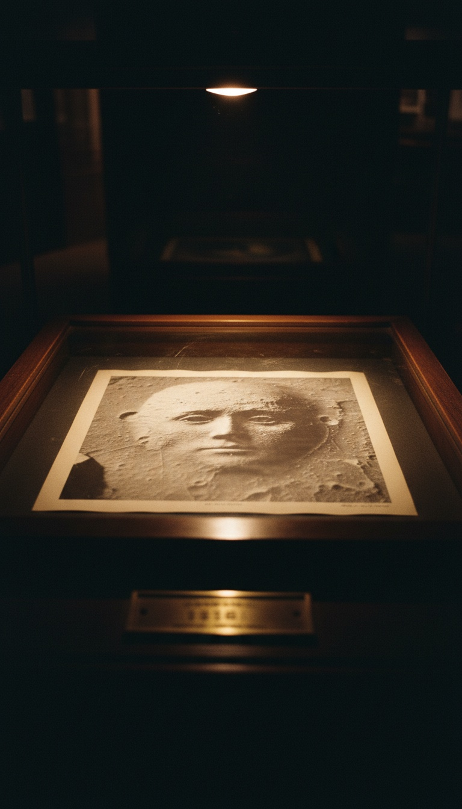

NASA photographed a two-kilometer human face on Mars in 1976. It then spent the next twenty-five years sending cameras back to replace the picture.
The first frame is still in the archive, filed as 35A72. The Viking 1 orbiter took it on July 25, 1976, over a stretch of northern Mars called Cydonia. It shows a mesa with two eyes, a nose and a mouth, staring straight up into the lens. Every image NASA released of that mesa afterward was meant to overwrite this one.

Frame 35A72: The Picture Nobody Ordered
Viking 1 was scouting a safe landing zone for its twin, Viking 2, when it passed over Cydonia about 1,873 kilometers up. The camera was hunting for flat ground. It caught a face instead, near 41 degrees north latitude, on the edge of the Martian lowlands.
The frame came down to the Jet Propulsion Laboratory in Pasadena, California. Viking imaging scientist Tobias Owen spotted it on the printout, and team members remember what he said: “Oh my God, look at this.”
Six days later, on July 31, 1976, JPL put out its caption. The release described “a huge rock formation in the center, which resembles a human head,” and said it was “formed by shadows giving the illusion of eyes, nose and mouth.”
Read that timeline again. NASA reached its verdict in under a week, from a single frame, before anyone on Earth had a second look at the mesa. The ruling came first, and the evidence was expected to fall in line behind it.
The Second Photograph NASA Said Showed Nothing
Viking project scientist Gerald Soffen told reporters that a later image, taken under a different sun, showed the face was gone. For most of the press, that line closed the case. It held for three years.
In 1979, Vincent DiPietro and Gregory Molenaar went digging through the National Space Science Data Center. They were two computer engineers contracted to NASA's Goddard Space Flight Center in Greenbelt, Maryland. They found frame 70A13, misfiled. Viking 1 had taken it thirty-five days after 35A72, with the sun sitting higher in the Martian sky.
The face was still there, eyes, nose and mouth intact under a sun that had climbed. Soffen's vanishing face had been sitting in NASA's own data center the whole time.
A shadow dies the moment the light moves. The face on Mars held its shape across thirty-five days and a different sky, in a frame NASA told the world showed nothing.
The Decade Of The Enhancers
DiPietro and Molenaar built their own image-processing method, the Starburst Pixel Interleaving Technique, and ran both Viking frames through it. Their 1982 book, Unusual Martian Surface Features, laid out what came back. They found a second eye socket hidden in shadow, a matching brow line, and fine structure inside the mouth that they read as teeth.
Mark Carlotto, an imaging scientist at The Analytic Sciences Corporation in Massachusetts, took the next step. His 1988 paper in the journal Applied Optics used shape-from-shading to rebuild the mesa in three dimensions. You can rotate his model and change the lighting, and the face keeps its features from angle after angle.
Richard C. Hoagland pushed the frame outward. His 1987 book, The Monuments of Mars: A City on the Edge of Forever, mapped a cluster of geometric mounds beside the face. He also mapped a five-sided structure to the southwest that researchers named the D&M Pyramid, after DiPietro and Molenaar. That makes three teams using three methods, and all three got the same result. The face held.
The Camera That Went Dark Three Days Out
By the early 1990s, Hoagland and thousands of supporters were pressing NASA to point its next Mars camera at Cydonia. That camera flew on Mars Observer, launched September 25, 1992, and built to map the planet in more detail than any Viking frame could.
On August 21, 1993, three days before Mars Observer was due to enter orbit, NASA lost contact with it. The spacecraft never spoke again. The one camera a whole movement had lobbied to aim at the face went silent on the doorstep of Mars.
The next look would take five more years, and it would come through a lens controlled by a private company in San Diego.
1998 And 2001: The Replacement Pictures
On April 5, 1998, Mars Global Surveyor passed over Cydonia. Its Mars Orbiter Camera was built and operated by Michael Malin's company, Malin Space Science Systems. The image was shot at an oblique angle through morning haze, run through a high-pass filter, and released to the public within hours. Researchers took one look at the washed-out gray and nicknamed it the Catbox.
Carlotto reprocessed the raw 1998 data and pulled the features back out. The eye socket returned, and so did the mouth. The shape NASA had just been accused of hiding was still sitting under the filter.
On April 8, 2001, the camera went back and imaged the mesa at 1.56 meters per pixel. NASA ran the result under the headline “Unmasking the Face on Mars.” Jim Garvin, chief scientist of the Mars Exploration Program, compared the mesa to a butte on the Snake River Plain of Idaho. NASA called it a natural hill and closed the case again.
This is where that verdict breaks. A face carved into a Martian mesa would be older than human memory, scoured by dust storms for longer than Earth has had pyramids. Walk into Room 4 of the British Museum in London and stand under the colossal granite head of Amenhotep III. After thirty-four centuries, the face still reads as a face. Stretch that across Martian deep time and you get what the 2001 frame shows: a worn mesa that still keeps the proportions of a head.
A sharper camera shows you erosion, and erosion is what age looks like. The 2001 picture records how old the face is.
Pyramids On The Planet That Held Water
Cydonia sits on the dichotomy boundary, the line where the cratered southern highlands drop into the smooth northern lowlands. Planetary scientists have mapped that line as the shoreline of an ancient northern ocean. The face looks out from what was once a coast.
NASA's own rovers have spent more than a decade proving Mars was wet. Curiosity landed in Gale Crater in August 2012 and drove onto an ancient lakebed. Perseverance landed in Jezero Crater in February 2021 and began sampling a river delta. Lakes, rivers and coastlines are what every early civilization on Earth was built beside.
Beside the face sit the mounds Hoagland mapped as the City and the five-sided D&M Pyramid. They are geometric forms clustered on a coastline, on the one planet in this solar system where NASA itself says life might once have lived. A full-scale Viking lander from this program stands in the Smithsonian's National Air and Space Museum in Washington, D.C. The orbiter that flew with it took a picture the agency has spent fifty years trying to talk the world out of.
The first photograph is the one NASA could not take back. Frame 35A72 went around the world in 1976, and people had been studying it for twenty-two years before the replacement pictures arrived. Every release since has been written as an answer to it.
Put the two sets of pictures side by side. On one side is a face caught by accident in 1976, confirmed by a second frame NASA said showed nothing, and rebuilt in 3D in 1988. On the other is a filtered gray image rushed out in 1998, then an “unmasking” in 2001. If it was only a hill, why did NASA need to change the picture? And what else in the Cydonia archive is still sitting under a frame number nobody has asked for? Tell me in the comments which picture you trust.
Before you go
7 books the Vatican doesn't want you reading. Free PDF — the texts they cut, with sources. Joined by 140+ Inner Circle members.
No spam. Unsubscribe anytime.
Go deeper
The Hidden Canon, Vol. I — Enoch. Jubilees. Thomas. Mary. Judas. 90 pages, 14 chapters, every receipt cited. The books your Bible quietly removed.
Read the Canon →Books that informed this investigation
As an Amazon Associate, Hidden Epoch earns from qualifying purchases. Cost to you: nothing.
Research safely
The VPN we use to research without being tracked. First 3 months free.
Get NordVPN →